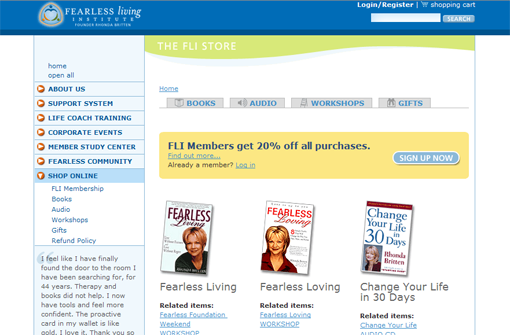
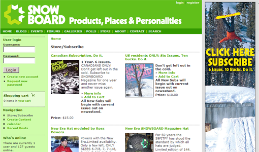
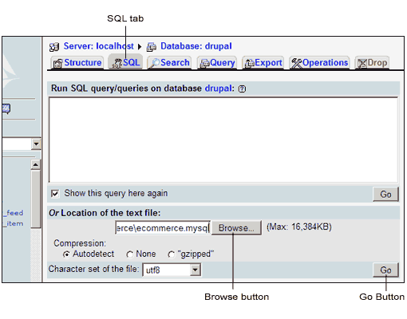
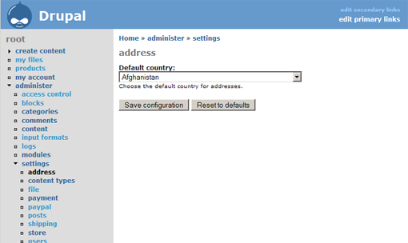
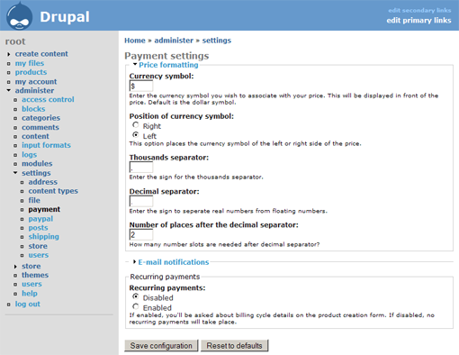
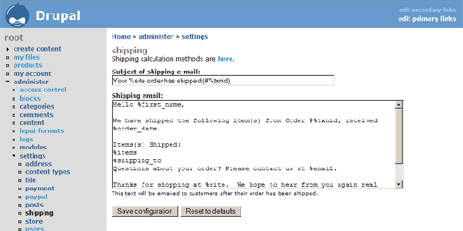
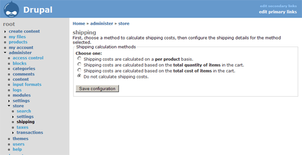
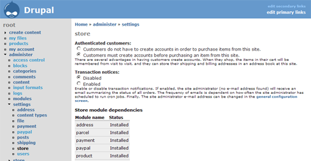

TODO:
This document will cover how to install and configure Drupal's E-Commerce package, which allows you to sell products, services and subscriptions through your website. It is made up of several components which are used together in order to provide a powerful framework for creating custom e-commerce solutions wrapped around the community-driven features of Drupal.
The E-Commerce module contains a vast array of features out of the box, and is also designed so that additional functionality can be added easily.
The E-Commerce module provides built-in support for a diverse array of product types, including shippable products, subscriptions, donations, file downloads, and collections of products.
Several payment methods are included out of the box, including PayPal, Authorize.net, e-xact, or C.O.D. You can also develop your own custom payment modules to interface with additional systems.
Items can be priced to either incur fees one time, in the case of product sales, or on a recurring basis for services such as memberships. Prices can also be adjusted for certain user groups, and applicable taxes can be configured by multiple locations. Shipping costs can be calculated on a per-item basis, based on quantity of items sold, or based on the total amount of items purchased.
For your shippable products, track stock levels to ensure that you have the right products in stock at the right time. Customers can review their order history at any time.
The system will generate invoices and shipping notifications automatically. Transaction reports are available which give sales summaries for your store.
The shopping cart and product 'look and feel' are themeable. Transaction and payment workflow is also customizable. You can completely customize e-mails customers receive about their order status.
To get an idea of its power, here are some showcase sites making use of Drupal and the E-Commerce module.
Figure x.x Fearless Living

Fearless Living uses the E-Commerce module for both tangible products (books, jewelry) as well as service-based products such as workshops and memberships.
Figure x.x Council of Writing Program Administrators
Council of Writing Program Administrators sells memberships through Drupal with the E-Commerce module.
Figure x.x Snowboard Magazine

Snowboard Magazine uses the E-Commerce module to sell magazine subscriptions and snowboard-related gear.
Note that these instructions assume that Drupal is installed and working. Please see the Installation and Upgrading handbook for further information on how to install Drupal.
Begin by downloading the latest release of the E-Commerce module from http://drupal.org/project/ecommerce.
The file will be a tar.gz archive, which you can extract using a tool like tar or WinZip. For example:
wget http://drupal.org/files/projects/ecommerce-4.7.0.tar.gz
tar -zxvf ecommerce-4.7.0.tar.gz
Or, in WinZip, simply right-click the file and choose Extract to here.
This will place the contents of the E-Commerce module into a folder called ecommerce. Place the folder and its contents in your Drupal site's modules folder.
Next, import the necessary tables from ecommerce.mysql into your database.
From the command line:
mysql -hhostname -uusername -p databasename < ecommerce/ecommerce.mysql
Enter your password when prompted.
From PHPMyAdmin:
Figure x.x PHPMyAdmin SQL Queries Window

In Drupal, go to administer >> modules. Unlike most modules, where there is a single option to enable, the E-Commerce module is actually made up of several different modules. Note that (C) denotes a contributed module, located in ecommerce/contrib/modulename. While these modules often provide useful functionality, they are not officially supported. Note that they may also require importing additional .mysql files. If present, these will be located in the module's folder (see the previous section for instructions).
Select the Required modules, one or more Payment Gateways, one or more Product types, and any Other modules which you wish to use and click Save configuration.
There are several places to go to configure the various modules which make up the E-Commerce module.
The Address module enables users to save billing and shipping addresses.
To configure its settings, go to administer >> settings >> address.
Figure x.x Address module settings screen

The only option available here is to configure a Default country for addresses. Select the country most of your customers are likely to come from, and choose Save configuration.
The Payment module dictates various payment options for your site.
To configure its settings, go to administer >> settings >> payment .
Figure x.x Payment module settings screen

The following options can be configured from this screen:
While by default, prices in the E-Commerce module are displayed in U.S. format ($10.00), this can be customized for international customers.
| Option name | Description |
|---|---|
| Currency symbol | The symbol that will accompany the price on items. For example, $ or €. |
| Position of currency symbol | Whether currency symbol should be placed to the left or right of the price. For example, $10.00 (left) or 10 € (right). |
| Thousands separator | The symbol for the thousands separator in prices. For example, a comma or a period. |
| Decimal separator | The symbol which separates a number from its decimal. For example, a comma or a period. |
| Number of places after the decimal separator | Denotes the number of places after the decimal separator the price should indicate. For example, $10.00 (2) or 10 € (0). |
This section allows you to specify notification messages that users will receive via e-mail. Note that each section can contain variables to fill in dynamic information about an order. See the table below for a list of variables.
| Option name | Description |
|---|---|
| Subject of invoice e-mail | The subject line of the e-mail customers will receive upon placing an order. |
| Customer invoice e-mail | The body of the e-mail customers will receive upon placing an order. |
| Subject of error e-mail | The subject line of the e-mail customers will receive upon an error occurring with the processing of their order. |
| Payment error e-mail | The body of the e-mail customers will receive upon an error occurring with the processing of their order. |
| Variable name | Description |
|---|---|
| %billing_name | The customer's first and last name. |
| %date | The current date |
| The website's administrator E-mail address (taken from administer >> settings) | |
| %items | The order details (quantity, product, and price) |
| %order_date | The date the order was placed. |
| %site | The website's (taken from administer >> settings) |
| %txnid | The customer's transaction ID. |
| %uri | The website's URL |
| %uri_brief | The website's URL without the http:// |
| %user_data | Customer's shipping and billing addresses. |
Recurring payments are useful if you wish to charge for things such as membership or subscriptions, which expire after a certain time and need to be re-billed. You can customize roles to add a user to upon payment, and set up one or more "reminder" e-mails that flag the customer at a certain time when their subscription is near expiry. Note that e-mails related to recurring payments have slightly different variables which can be used.
| Option name | Description |
|---|---|
| Recurring payments | Whether recurring payments are enabled or disabled. |
| Role inheritance | Choose from a list of user groups to which a customer is added upon completion of an order. Useful for members-only sites, where users must first pay a registration fee in order to access content. |
| Subject of recurring payment notice e-mail | The subject line of the e-mail customers will receive to notify them that their subscription is near expiration. |
| Recurring payment notice e-mail | The body of the e-mail customers will receive to notify them that their subscription is near expiration. |
| Interval | How long before subscription expiration should a recurring notice be sent? Used in conjunction with Unit. For example, 1 week. |
| How long before subscription expiration should a recurring notice be sent? Used in conjunction with Interval. For example, 1 week. | |
| Subject of recurring payment expiration e-mail | The subject line of the e-mail customers will receive to notify them that their subscription has expired. |
| Recurring payment expiration e-mail | The body of the e-mail customers will receive to notify them that their subscription has expired. |
| Variable name | Description |
|---|---|
| %billing_firstname | Customer's first name. |
| %billing_lastname | Customer's last name. |
| %renewal_item | The name of the subscription and its transaction ID. |
| %renewal_link | The URL to renew the subscription (cart/renew/PRODUCT_ID/TRANSACTION_ID). |
| %site | The website's (taken from administer >> settings). |
| %time_to_expire | The amount of time left until subscription expires. |
| %time_since_expired | The length of time that has passed since the subscription expired. |
| %uri | The website's URL. |
Go to administer >> settings >> shipping to configure the e-mail sent to customers upon a product being shipped.
Figure x.x Shipping module settings screen

The two fields are merely the subject and body of the e-mail sent to a customer upon a product being shipped. The following is a list of variables you can use in the e-mail to customize it to a particular customer.
| Variable name | Description |
|---|---|
| %billing_to | Customer's billing address. |
| %date | Today's date. |
| The website's administrator E-mail address (taken from administer >> settings). | |
| %first_name | Customer's first name. |
| %items | The order details (quantity, product, and price). |
| %order_date | Date that the order was placed. |
| %shipping_to | Customer's shipping address. |
| %site | The website's (taken from administer >> settings). |
| %txnid | Order's Transaction ID. |
| %uri | The website's URL. |
| %uri_brief | The website's URL without the http://. |
Go to administer >> store >> shipping to customize shipping options for your products.
Figure x.x Shipping calculation screen

The options available here are:
If this option is selected, each shippable product will contain an extra field Shipping charge where a value can be entered to cover shipping costs.
If this option is selected, you are given the option to select a flat shipping rate based on quantity. For example, 1 item will cost $5.00 to ship, 2-4 items will cost $9.00 to ship.
This option allows you to set shipping costs based on the amount of items purchased. For example, you can make orders over $30.00 have free shipping.
If this option is selected, no shipping costs are attached to any products.
Go to administer >> settings >> store to configure general settings for your site's store.
Figure x.x Store settings screen

This screen contains the following options:
Choose here whether or not customers must register in order to place an order.
Enable this option to receive e-mail notification each time an order is placed.
This is not an option, but rather lists all of the required modules for the store to function. Ensure that all modules say Installed. If any are listed as Not found, your site could have errors when attempting to process an order.
A message to display to users when they view their order history.
// A basic guide to walk through the process of creating products, setting options, and how the site looks from a customer's POV
// Section with step-by-step "how to" on setting up each of the following types of sites